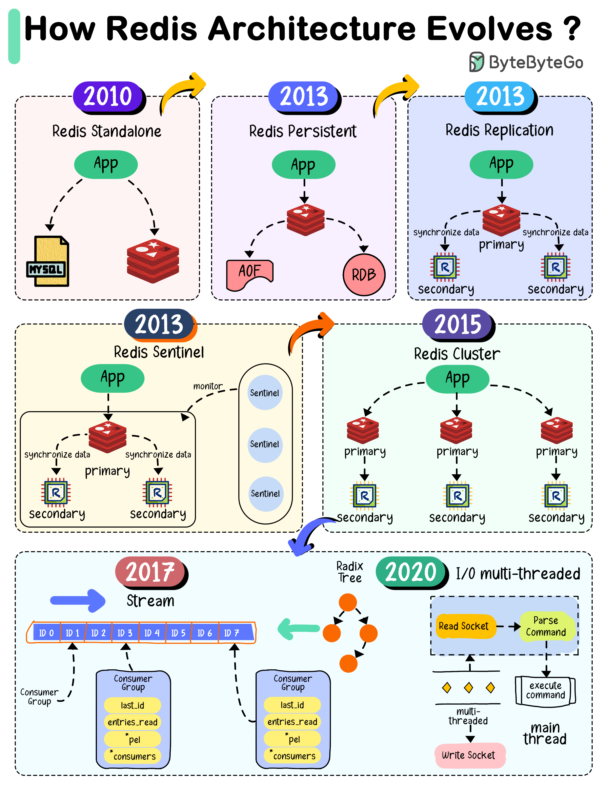

Redis is a popular in-memory cache. How did it evolve to the architecture it is today?
When Redis 1.0 was released in 2010, the architecture was quite simple. It is usually used as a cache to the business application.
However, Redis stores data in memory. When we restart Redis, we will lose all the data and the traffic directly hits the database.
When Redis 2.8 was released in 2013, it addressed the previous restrictions. Redis introduced RDB in-memory snapshots to persist data. It also supports AOF (Append-Only-File), where each write command is written to an AOF file.
Redis 2.8 also added replication to increase availability. The primary instance handles real-time read and write requests, while replica synchronizes the primary’s data.
Redis 2.8 introduced Sentinel to monitor the Redis instances in real time. is a system designed to help managing Redis instances. It performs the following four tasks: monitoring, notification, automatic failover and configuration provider.
In 2015, Redis 3.0 was released. It added Redis clusters.
A Redis cluster is a distributed database solution that manages data through sharding. The data is divided into 16384 slots, and each node is responsible for a portion of the slot.
Redis is popular because of its high performance and rich data structures that dramatically reduce the complexity of developing a business application.
In 2017, Redis 5.0 was released, adding the stream data type.
In 2020, Redis 6.0 was released, introducing the multi-threaded I/O in the network module. Redis model is divided into the network module and the main processing module. The Redis developers the network module tends to become a bottleneck in the system.